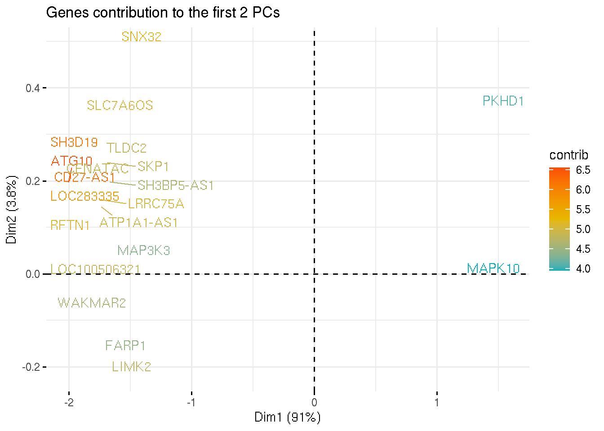
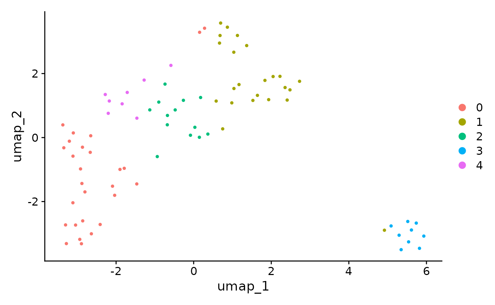

6. DEG
Francesco Carbone
Initial commit 14-04-2023 (rebuilt mars 2024)
6_DEG.RmdDEG for dummies … and biologists
As a rule of thumb, DE test is usually performed on the uncorrected counts rather than on the batch-corrected ones.
It is not ideal to run DE analysis on batch corrected values because the correction introduces a dependency between expression values, which will cause the violation of the indipendence assumption of every statistical tests (e.g. every measurements are independent from each other).
After performing the DE test it should be possible to determine if the results are biologically relevant or if the technical variability is affecting the results by masking the important biological events.
In the cases where the batch is strong, it is possible to account for it during DE testing (like it is usually done in Bulk RNA-Seq) by
- Setting
test.useto either LR, negbinom, poisson, or MAST, and specifying the covariate variables withlatent.vars= c("covariate1","covariate2",..). - Using monocle3 and providing the design to
fit_models:
fit_models(cds_object, model_formula_str = "~gender + batch"). - Correcting the batch with external packages (e.g. scVI or Scanorama) and running DE testing on the corrected counts.
- Psudobulk
To regress or not to regress
vars.to.regress is used to specify the variable to
regress out during scaling, so that their effect does not contribute too
much to the PCA.
NOTE: Regressing out genes, is only used for PCA dimension reduction, and does not affect DE testing.
latent.vars in
FindMarkers() is used to pass variable that needs to be
included into the differential expression model selected.
NOTE: Latent variable will affect DE testing.

A word on the uMAP
When reading a umap, it is important to understand that:
- The size of the cluster does not mean much
- The global position of the clusters is better preserved in the umap projection, but the distances between clusters are not meaningful
In addition, the DE genes are not the genes driving the clustering
and the cell displacement in the umap. It is possible that there might
be a degree of overlap and similarity, but that’s all.
To get an understanding of why the umap looks like this, we need to
check the genes in each dimension.
In bulk RNA-Seq, this is done by looking at the genes that contribute to the different PCs.

Using a dummy dataset (pbmc_small), something similar is
also possible in single-cell
## Modularity Optimizer version 1.3.0 by Ludo Waltman and Nees Jan van Eck
##
## Number of nodes: 80
## Number of edges: 2352
##
## Running Louvain algorithm...
## Maximum modularity in 10 random starts: 0.5533
## Number of communities: 2
## Elapsed time: 0 seconds
## Modularity Optimizer version 1.3.0 by Ludo Waltman and Nees Jan van Eck
##
## Number of nodes: 80
## Number of edges: 2352
##
## Running Louvain algorithm...
## Maximum modularity in 10 random starts: 0.4014
## Number of communities: 2
## Elapsed time: 0 seconds
## Modularity Optimizer version 1.3.0 by Ludo Waltman and Nees Jan van Eck
##
## Number of nodes: 80
## Number of edges: 2352
##
## Running Louvain algorithm...
## Maximum modularity in 10 random starts: 0.3074
## Number of communities: 3
## Elapsed time: 0 seconds
## Modularity Optimizer version 1.3.0 by Ludo Waltman and Nees Jan van Eck
##
## Number of nodes: 80
## Number of edges: 2352
##
## Running Louvain algorithm...
## Maximum modularity in 10 random starts: 0.2374
## Number of communities: 4
## Elapsed time: 0 seconds
## Modularity Optimizer version 1.3.0 by Ludo Waltman and Nees Jan van Eck
##
## Number of nodes: 80
## Number of edges: 2352
##
## Running Louvain algorithm...
## Maximum modularity in 10 random starts: 0.2111
## Number of communities: 5
## Elapsed time: 0 seconds
## umap_ 1
## Positive: SDPR, PPBP, PF4, TREML1, CA2, MYL9, TUBB1, PGRMC1, RUFY1, PARVB
## Negative: GNLY, AKR1C3, IGLL5, HLA-DQA1, CD1C, HLA-DPB1, RP11-290F20.3, VDAC3, S100A9, S100A8
## umap_ 2
## Positive: RP11-290F20.3, HLA-DPB1, S100A9, S100A8, HLA-DQA1, IGLL5, CD1C, PARVB, VDAC3, RUFY1
## Negative: SDPR, PF4, TREML1, PPBP, PGRMC1, GNLY, AKR1C3, TUBB1, CA2, MYL9The negative genes in both projections are the genes driving the clustering of cluster 3 apart from the rest of the cells. Are these genes genes DE in cluster 3? Maybe yes, maybe no. That is not the point.